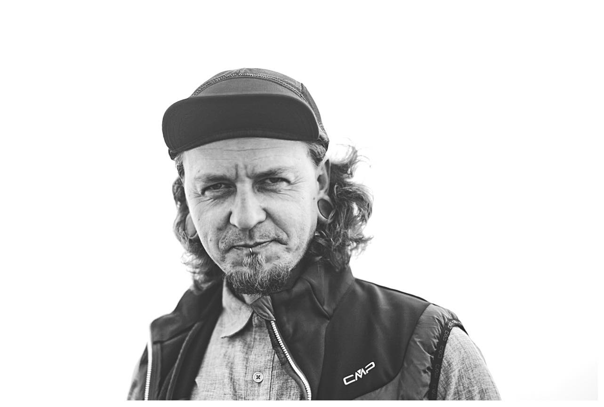

Vojto

Summary
I am a versatile and adaptable professional who can effectively manage people, improve processes, and contribute to the success of the company I work for. My goal is to continuously improve and contribute to the success of my career and the company I am a part of.
Education
- Secondary Vocational School of Commerce
Work Experience
Amador & Vitez, DE Cook 2000 - 2002
- Preparing cold and hot dishes in a luxury restaurant.
Kúpele Lúčky Bartender, Waiter 2003
- Running a spa bar.
- Preparing drinks, communicating with and serving customers.
- Working with cash registers, performing accounting closures and inventories.
WANDALL Owner of a Store and Distribution Company 2003 - 2006
- Running a retail and wholesale store with sports equipment.
- Communicating with customers, ordering and receiving goods.
- Distributing goods, working with cash registers, invoicing, organizing events and sports competitions.
Stepa Slovakia s.r.o. Warehouse Worker and Driver 2006 - 2012
- Receiving and storing goods, preparing goods for dispatch.
- Operating forklifts, communicating with customers, delivering goods within Slovakia and the Czech Republic.
TRULINE, UK Warehouse Worker 2013 - 2016
- Preparing goods for dispatch, palletizing.
- Working with warehouse software, operating various types of forklifts.
GREYLAND Limited, UK Warehouse Manager, Supervisor 2016 - 2019
- Managing a team of warehouse workers, receiving materials, storing goods.
- Picking and loading goods for dispatch.
- Warehouse inventory management, working with various types of forklifts.
- Communication with customers, working with warehouse software.
Ing. Ján Buchanec - Technik 2020 - Present
- Specialized Tool Sales Representative for Craftsmen
- Customer care.
- Ordering and receiving goods.
- Creating price quotes for companies.
- Managing the e-shop, creating and processing content for assigned product brands.
Certificates and Courses
- Forklift
- Reach Truck
- Horizontal Order Picker
- Vertical Order Picker
Other